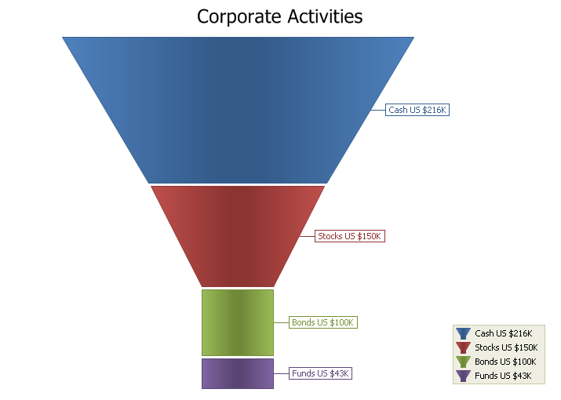

Xtreme Chart Pro
 Xtreme Chart Pro ActiveX Control v15.3
Xtreme Chart Pro ActiveX Control v15.3
|
| Control | Description |
|---|---|
| ChartControl | Chart Control. |
| Class Module | Description |
|---|---|
| ChartAppearance | Represents the appearance of a chart and it's elements. |
| ChartAreaSeriesStyle | Area chart style. |
| ChartAxis | Represents a chart axis (both x and y axis). |
| ChartAxisConstantLine | Represents a constant line parallel to an axis. |
| ChartAxisConstantLines | Represents a collection of ChartAxisConstantLine objects. |
| ChartAxisCustomLabel | Represents a custom label displayed for a value in an axis. |
| ChartAxisCustomLabels | Represents a collection of ChartAxisCustomLabel objects. |
| ChartAxisGridLines | Represents the grid lines parallel to an axis. |
| ChartAxisLabel | Represents the text label on an axis. |
| ChartAxisRange | Represents the range of values and the properties of the range for the given axis. |
| ChartAxisStrip | Represents a strip parallel to an axis. |
| ChartAxisStrips | Represents a collection of ChartAxisStrip objects. |
| ChartAxisTickMarks | Represents the tick marks in an axis. |
| ChartAxisTitle | Represents the axis title. |
| ChartBarSeriesLabel | Properties used by the labels of Bar Chart styles. |
| ChartBarSeriesStyle | Bar chart style. |
| ChartBorder | Properties used to draw the chart elements's border. |
| ChartBubbleSeriesStyle | Bubble chart style. |
| ChartCandleStickSeriesStyle | Candle Stick\Financial\Stock chart style. |
| ChartContent | Represents the content of the chart. This object has a appearance collection, series collection, title collection and legend. |
| ChartControlGlobalSettings | Chart Control Global Settings. |
| ChartDiagram | Represents a chart diagram. This object acts as a base class for 2D and 3D diagrams. |
| ChartDiagram2D | Represents the diagram used to draw a 2D chart (point, area, bar, etc). Used for all charts except 3D views and 2D Pie. |
| ChartDiagramCollection | Represents a collection of ChartDiagram objects. |
| ChartElement | Represents an element of the chart (point, etc...) |
| ChartFastLineSeriesStyle | Fast Line style (use when plotting thousands of points and drawing speed is important). |
| ChartFillStyle | Represents the styles used to fill\shade the background of various elements of the chart (strips, interlacing, background, markers, labels, legend, etc) . |
| ChartFont | Font used to display the element. |
| ChartFunnelSeriesLabel | Properties used by the labels of Funnel Chart styles. |
| ChartFunnelSeriesStyle | Funnel Chart style |
| ChartGanttSeriesStyle | Gantt series style. |
| ChartHighLowSeriesStyle | Financial\Stock chart style. |
| ChartLegend | Represents the chart's legend. |
| ChartLegendItem | Chart Legend Item object. |
| ChartLineSeriesStyle | Line Chart Style. |
| ChartLineStyle | Represents a chart line style. This is the style applied to a data series when using a chart style that uses lines (line, area, spline, etc..) |
| ChartMarker | Marker used to display a plot\point in the series. |
| ChartNumberFormat | Holds properties used to help format numbers to strings. This is used to format labels throughout the chart. |
| ChartPalette | Represents a palette used to color a series. |
| ChartPieDiagram | Represents the diagram used to draw a 2D Pie chart. |
| ChartPieSeriesLabel | Represents the label properties used to display labels for a pie chart. |
| ChartPieSeriesStyle | 2D Pie Chart or 2D Doughnut Chart style. |
| ChartPointSeriesLabel | Properties used by the labels of Point Chart styles and those styles that are derived from the point series (area, bar, bubble, line, spline, stacked bar). |
| ChartPointSeriesStyle | Point Chart Style. |
| ChartPyramid3DSeriesStyle | Pyramid 3D style. |
| ChartPyramidSeriesLabel | Properties used by the labels of Pyramid Chart styles. |
| ChartPyramidSeriesStyle | Pyramid 2D style. |
| ChartRadarAreaSeriesStyle | Radar/Polar Area Style. |
| ChartRadarDiagram | Represents the diagram used to draw a Radar/Polar chart. |
| ChartRadarLineSeriesStyle | Radar/Polar Line Style. |
| ChartRadarPointSeriesLabel | Properties used by the labels of Radar/Polar Chart styles. |
| ChartRadarPointSeriesStyle | Radar/Polar Point Style. |
| ChartRadarSplineAreaSeriesStyle | Radar/Polar Spline Area Style. |
| ChartRadarSplineSeriesStyle | Radar/Polar Spline Style. |
| ChartRangeBarSeriesLabel | Properties used by the labels of Range Bar Chart styles. |
| ChartRangeBarSeriesStyle | Range Bar Style. |
| ChartRangeSplineAreaSeriesStyle | Range Area chart style |
| ChartScatterLineSeriesStyle | Scatter chart style |
| ChartSeries | Represents a series of data in the chart. |
| ChartSeriesCollection | Represents a collection of ChartSeries objects. |
| ChartSeriesLabel | Represents the label properties used to display labels for data in a data series. |
| ChartSeriesPoint | Represents a point of data is a series. |
| ChartSeriesPointCollection | Represents a collection of ChartSeriesPoint for a given ChartSeries. |
| ChartSeriesStyle | Represents the style applied for a given ChartSeries. |
| ChartSplineAreaSeriesStyle | Spline area chart style. |
| ChartSplineSeriesStyle | Spline Chart Style. |
| ChartStackedAreaSeriesStyle | Stacked Area\100% Stacked Area chart. |
| ChartStackedBarSeriesStyle | Stacked Bar\100% Stacked Bar chart. |
| ChartStackedSplineAreaSeriesStyle | Stacked Spline Area Chart Style |
| ChartStepAreaSeriesStyle | Step Area chart style |
| ChartStepLineSeriesStyle | Step Line chart style |
| ChartTitle | Represents a title displayed in the chart. |
| ChartTitleCollection | Represents a collection of ChartTitle objects displayed in the chart. |
| PropExchange | Object used for reading and writing Chart Control layout information to\from a XML file, the registry, or binary file. |
| ToolTipContext | The ToolTipContext object represents the tool tip window that is used to display tool tips. |
| Enumeration | Description |
|---|---|
| ChartAxisAlignment | Axis alignment. |
| ChartAxisDateTimeScaleUnit | Time scale units used on this axis for a series with an ArgumentScaleType set to xtpChartScaleDateTime. |
| ChartBarLabelPosition | Defines the various positions available to the bar labels. |
| ChartDashStyle | Defines the various line styles for the charts. |
| ChartDateTimeFormatCategory | Defines the various DateTime formats available to format labels in the chart. |
| ChartDocking | Defines the various docking positions of a chart title. |
| ChartFillMode | Defines the various background fill modes. |
| ChartFunnelLabelPosition | Defines the various positions available to the funnel labels. |
| ChartGradientAngle | Defines the different Gradient Angles used for background filling. |
| ChartHatchStyle | Defines the various hatch styles used for background filling. |
| ChartLegendAlignment | Defines the various legend alignments. |
| ChartLegendDirection | Defines the various legend orientations. |
| ChartMarkerType | Defines the various markers available to the styles that display a dot\point (line, spline, etc...). |
| ChartNumberFormatCategory | Defines the various number formats available to format labels in the chart. |
| ChartPanelDirection | Orientation of the chart's content. |
| ChartPieLabelPosition | Defines the various positions available to the pie labels. |
| ChartPyramidLabelPosition | Defines the various positions available to the pyramid labels. |
| ChartRadarDiagramStyle | Defines the various diagram styles a radar\polar chart can use (circle\spider). |
| ChartRangeBarLabelPosition | Defines the various positions available to the range bar labels. |
| ChartRangeBarLabelType | Specifies which labels will be displayed in a range bar chart. |
| ChartScaleType | Defines the various scales type for a series. |
| ChartStringAlignment | Defines the various alignments for the chart strings such as the title. |
| XTPToolTipIcon | Specifies the icon that will be displayed in the tool tip window when displaying the title and description of the control using the ShowTitleAndDescription method. |
| XTPToolTipStyle | Specifies the style of the tool tip when it is displayed. |
The Chart control has many different style, which include:
Combination Chart
A combination chart uses two or more chart types to emphasis that the chart contains different types of data.
Code example here.

Area Chart
An area chart is very similar to a line chart. Data is displayed using different colors in the "area" below the line. Each series of points is represented with a different color. Area charts are commonly used to display accumulated values over a period of time.
Code example here.
100 Stacked Area Chart
A 100 Stacked Area chart is very similar to a chart, only the data is stacked on top of each other and the data values for each item will total 100%. Data is displayed using different colors in the "area" below the line. Each series of points is represented with a different color. Area charts are commonly used to display accumulated values over a period of time.
Code example here
Stacked Area Chart
A Stacked Area chart is very similar to a chart. Data is displayed using different colors in the "area" below the line. Each series of points is represented with a different color. Area charts are commonly used to display accumulated values over a period of time.
Code example here
Bar Chart
A bar chart displays data with rectangular "bars" with lengths relative to the data they symbolize. Generally a bar chart is used to display discontinuous data (data that has a discrete value), however it can also be used for continuous data. Examples of discontinuous data would be "car color" or "tire size", examples of continuous data would be "population" or "age".
Code example here.
Bubble Chart
A bubble chart is just a variation of a point chart, only it displays bubbles of the data points. Data in displayed in a grid using Cartesian coordinates. Data is displayed along the x and y axis, where x and y can represent any type of data (as in the chart below, x - decades, y - population).
Code example here.
CandleStick Chart
A Candlestick Chart used to display trends for financial data, generally stock market prices. Candlestick charts are much easier to rear than a traditional bar chart to a stock market trader. The candle sticks make it fast and easy to compare the high and low, open and close of data. Each "candle stick" represents the high, low, open and close of data for a given value. The relationship between these candles is important in determining trends among stock prices. The "open" and "close" values are displayed as the "body" of the candle, and the "high" and "low" are displayed as simple lined above and below the body. Buying pressure is indicated with hollow candles, where the close is greater than the previous high. Selling pressure is indicated with a filled red candle, where it's close value is lower than the previous close value.
Code example here.

Line Chart
A line chart is is used to show a series of data points connected by straight line segments. Charts of this type are generally used to illustrate trends in data over a period of time.
Code example here.
2D Pie Chart
A pie chart displays a series of data as "slices" of a "pie". The data in the pie chart will be divided up into slices, each represents a percentage of the pie. The size of the slice will be proportional to the data it represents and each slice will be combined to represent some whole value.
Code example here.
2D Doughnut Chart
A Doughnut chart functions exactly the same as a pie chart, only there is a blank hole in the middle of the pie.
Code example here.
Point Chart
A point chart displays data in a grid using Cartesian coordinates. Data is displayed along the x and y axis, where x and y can represent any type of data (as in the chart below, x - decades, y - population). A point chart is also referred to as a plot or scatter chart.
Code example here.

Spline Area Chart
A Spline Area chart is very similar to a spline chart. Data is displayed using different colors in the "area" below the line. Each series of points is represented with a different color. Area charts are commonly used to display accumulated values over a period of time.
Code example here.
Stacked Spline Chart
A Stacked Spline Area chart is very similar to a spline chart. Data is displayed using different colors in the "area" below the line. Each series of points is represented with a different color. The lines in the spline chart are much more smooth flowing than an area chart. Area charts are commonly used to display accumulated values over a period of time.
Code example here

Spline Chart
A spline chart is used to show information as a series of data points connected by smooth flowing "spline" segments. The spline will draw a smooth flowing line through all data points in the data set. Charts of this type are generally used to illustrate trends in data over a period of time.
Code example here.
Stock\Bar Chart
A Stock (Bar) Chart used to display trends for financial data, generally stock market prices. A Stock\Bar chart is similar to a Candlestick chart, but is considered harder to read for stock market analyse. The stock\bar chart displays the high and low, open and close of data. Each "bar" represents the high, low, open and close of data for a given value. The relationship between these bars is important in determining trends among stock prices. The "open" and "close" values are displayed as "tick" marks on the side of the bar, the "high" is the tick mark on the right and the "low" is the tick mark on the left of the bar. Buying pressure is indicated with black bars, where the close is greater than the previous high. Selling pressure is indicated with red bars, where it's close value is lower than the previous close value.
Code example here.
StepLine Chart
The Step Line chart is another for of a Line chart. Unline the traditional line chart, Step line charts only use vertical and horizontal lines to connect the data points forming what looks like steps.
Code example here.
Funnel Chart
The Funnel chart displays a series of data in a funnel shape. The top portion of the funnel will typically contain the largest percentage of the data, while the bottom will "funnel" down to the smallest percentage, however the funnel will allow data to be added in any combination to suit your needs. The size of the funnel sections are all relative to each other and the order does not matter.
Code example here.

Pyramid Chart
The Pyramid chart displays a series of data in a pyramid shape. The size of the pyramid sections are all relative to each other and the order does not matter. You can have a "top heavy" pyramid where the largest section is the top section or any other combination.
Code example here.
Scatter Line Chart
A Scatter chart is similar to a line chart, only the scatter chart will plot the data values in the exact order that they are entered and connect the plots with a line (unlike the line chart which will order the data based on the x and y axis). Scatter charts can be used for scientific data or can be used as a trend chart.
Code example here.
Range Bar Chart
A Range Bar is used to display data\events that have a finite beginning and end value. The range bar can be displayed both overlapped or side-by-side so the different ranges of data can easily be compared to each other.
Code example here.
Stacked Bar Chart
A stacked bar chart is similar to a standard bar chart except the bars for a given argument will be stacked on top of each other. You can stack the bars vertically or horizontally. This type of chart is used to compare the relationship of parts to the whole. Each bar is used to represent a total. For example, you could show the number of males\females that prefer each of the 4 major sports (football, basketball, hockey, baseball) in a stacked bar chart. There would be 4 stacked bars, each divided into 2 categories (male\female).
Code example here.
Side-By-Side Stacked Bar Chart
A side-by-side stacked bar chart is similar to a standard stacked bar chart except you can have many stacked bars per argument. For example, building on the example from the stacked bars, you can use side-by-side stacked bars to show the male\female sports preference by country. So now you might have 3 countries (USA, Europe, Australia), each of which will have 4 stacked bars for each of the major sports and those bars will be divided into 2 categories, male\female.
Code example here.
Chart Builder Tool
Using the supplied "Chart Builder" tool you can build your charts, customize the colors, etc. and export them to an xml file that can then be loaded into the chart control.
Code example here.
Multiple Chart Diagrams
Almost any combination of chart types can be combined together into the same view.
Code example here.
Gantt Chart
A Gantt chart is a type of range bar chart commonly used for task\schedule planning. Typically a Gantt chart is used for displaying the progression of a project and will display the length each individual task will take versus the progression of time.
Code example here.
|
Copyright (c) 1998-2012 codejock Software. All rights reserved.
|
|
What do you think about this topic? Send feedback!
|
 User Controls
User Controls